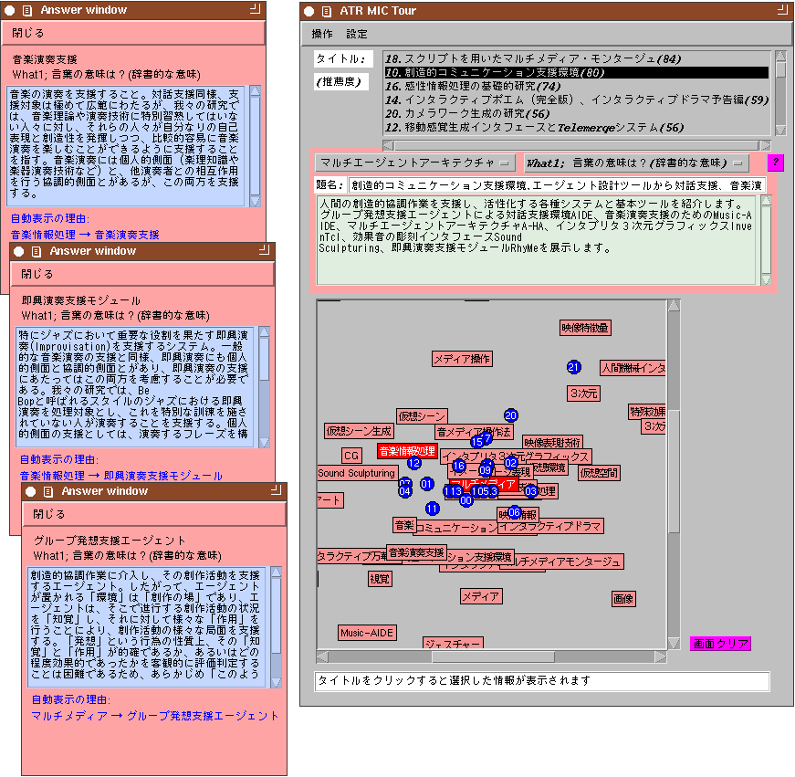

Takealook: Personalized Information Presentation According to User's Interests
We propose a method for presenting information
based on individual user interests and knowledge.
In previous work on recommending information, such as through WWW pages,
the user could not always get his/her needed information,
since the user's interests were represented only in keywords or key categories,
and the contents of the presented information were previously formed by the information presenter; consequently, this information did not necessarily match the user's interests and knowledge.
In the proposed method, the system acquires the user's implicit and/or explicit interests and knowledge from a question-and-answer interaction
and presents the user with focus-of-interest information based on them.
For personalizing the presentation and recommendation of information,
the system provides each user with a information retriever using the user's operation records, a personal conceptual space, and control knowledge.
